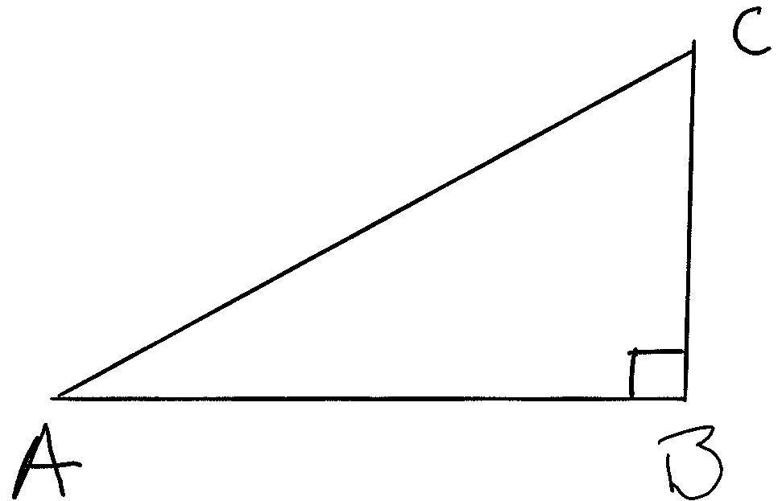
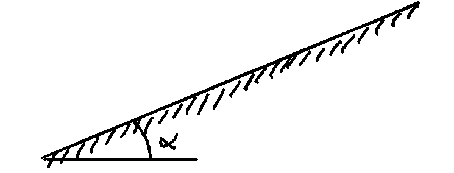
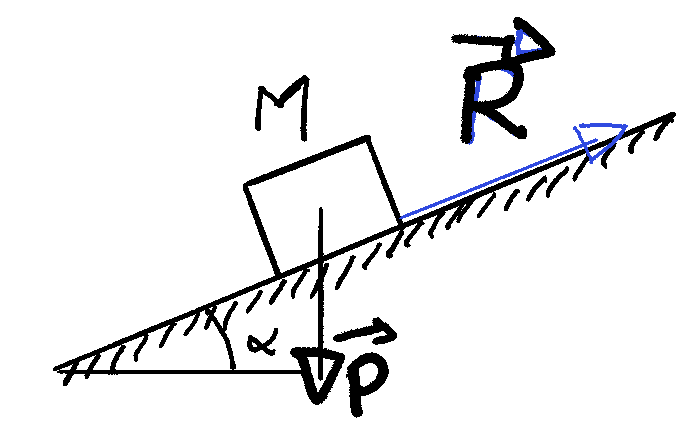
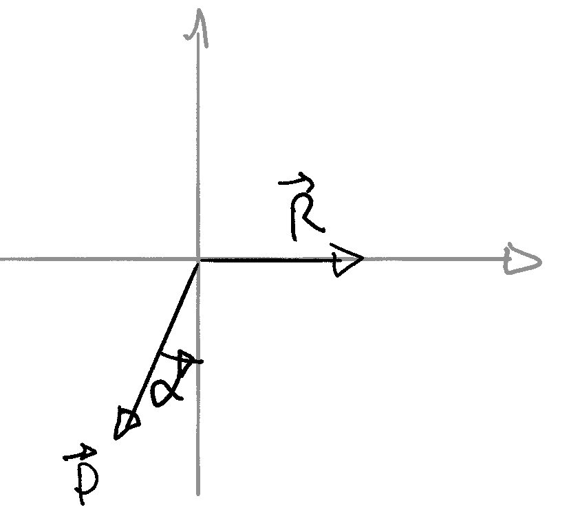
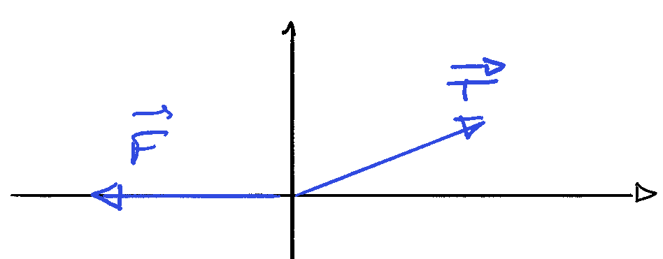

En mathématiques on aime pouvoir mettre en relation, comparer différentes sortes de mesures et de normes. Dans le cas de la trigonométrie, ce domaine est plus souvent mal aimé que vénéré.
Dans une première approche, on peut voir la trigonométrie comme un outil qui permet de comparer angles et longueurs.
Le cadre naturel pour étudier la trigonométrie est le triangle rectangle.
On rappelle que dans un triangle la somme des angles vaut $\pi$.
Dans un triangle rectangle, le côté le plus long est toujours le côté opposé à l'angle droit et est appelé l'hypoténuse.
On a dans ce triangle la relation de Pythagore qui dit que le carré de l'hypoténuse vaut la somme des carrés des deux autres côtés.
On considère un triangle $ABC$ rectangle en $B$.

Dans ce triangle on choisit le point $A$ par exemple avec l'angle formé par les deux côtés $[AB]$ et $[AC]$.
Donc on considère cet angle que l'on appelle $\alpha$.

Dans ce triangle, soient les longueurs : $AB$ et $AC$. Si on calcule le rapport des longueurs du côté adjacent à l'angle sur l'hypoténuse, soit :$\dfrac{AB}{AC}$, alors on obtient ce que l'on appelle le cosinus de l'angle.
Autrement dit le cosinus est un rapport de longueurs.
Pour le calcul d'un cosinus, à l'aide de rapports de longueurs, on doit impérativement se placer dans un triangle rectangle.
De la même manière on peut définir le sinus, qui lui sera le rapport du côté opposé à l'angle sur l'hypoténuse, soit $\dfrac{BC}{CA}$.
Dans ce triangle $ABC on a donc définit cosinus et sinus:
$\cos \alpha = \dfrac{AB}{AC}$ : le cosinus est le rapport de la longueur du coté adjacent à l'angle sur l'hypoténuse.
$\sin \alpha = \dfrac{BC}{AC}$ : le sinus d'un angle est le rapport de la longueur du coté opposé à l'angle sur l'hypoténuse.
La tangente est la troisième fonction trigonométrique de base à connaître. Elle est définie par le rapport du sinus et du cosinus.
On a pour $\alpha$ du triangle rectangle du début et $AC \neq 0$ qui est équivalent de dire que $\alpha \neq \pi / 2 + k \pi \, \, , \, \, k \in \mathbb{Z}$:
Exercice: Ecrire les cosinus et sinus de $\beta$.
$$ \tan \alpha = \dfrac{\sin \alpha}{\cos \alpha} = \dfrac{BC}{AC} $$
La tangente est utile notamment quand on dispose d'un longueur et d'une hauteur et pas de l'hypoténuse. On peut alors trouver un angle, ou autrement, si on a un angle et une distance de trouver une hauteur.
Pour généraliser on se place dans un cercle de rayon $1$ et centré en l'origine.

Cette image nécessite quelques précisions.
On se place dans un repère orthonormé, d'origine $O$. point sur lequel est centré un cercle de rayon $1$. On place un point $M$ quelconque sur ce cercle.
$OM$ est un rayon du cercle. Il est de taille $1$.
Les coordonnées de $M$ sont les projections de ce point sur les deux axes. Ces projection sont obtenues à l'aide de l'angle $\alpha$ et de la longueur de $OM$ qui ici valant $1$ n'apparaît pas dans les calculs.
Donc on obtient les coordonnées de $M$ :
Sur l'axe horizontal on projette la longueur $OM$ pour obtenir le cosinus de $\alpha$. $\cos \alpha = \dfrac{x_M}{OM}$. Comme $OM =1$ on a $x_M = \cos \alpha $
De la même manière l'axe vertical on projette la longueur $OM$ pour obtenir le sinus de $\alpha$. $\sin \alpha = \dfrac{y_M}{OM}$. Comme $OM =1$ on a $y_M = \cos \alpha $
\[ M=\begin{pmatrix} x_M = \cos \alpha\cr y_M = \sin \alpha\cr \end{pmatrix} \]
En mécanique on étudie le mouvement des choses et les forces qui peuvent leur être appliquées. Concrètement ici nous allons prendre un exemple concret en calculant la force nécessaire à un véhicule pour en tracter un autre, aux forces en jeu pour tenir un objet suspendu entre deux colonnes, poser un objet sur un plan incliné. On fera pour l'instant abstraction de la force de répulsion du plan incliné, pour les puristes.
On va voir comment d'un système physique on peut en découvrir les principes de fonctionnement à l'aide des vecteurs en jeu. Notamment en regardant les forces en jeu.
Un plan incliné est représenté de profil par une droite coupant l'horizontale selon un angle $\alpha$.

Sur ce plan incliné on place un mobile $M$.

Ce mobile est soumis à son poids $\overrightarrow{P}$. Si on considère que le plan incliné n'oppose aucune force de friction, le mobile $M$ descend le long de la pente.

On suppose que le plan incliné n'est pas parfaitement glissant. Lorsque $M$ est posé dessus on admet que les frottements empêchent $M$ de glisser vers le bas de la pente. On représente donc par $\overrightarrow{R}$ la force de résistance du plan incliné.

$M$ subit deux forces, son poids et la résistance du plan incliné. On dispose de deux vecteurs, on se place donc dans un repère pour obtenir les coordonnées des vecteurs en fonction de leur norme (l'intensité de chaque vecteur) et de leur incidence, l'angle auquel ils sont appliqués.

On place le repère correctement.

Et on ne conserve que les vecteurs.

On peut donc obtenir les coordonnées des vecteurs selon : $||\overrightarrow{P}||$, $||\overrightarrow{R}||$ et $\alpha$. Cet angle permet d'exprimer les coordonnées de ces deux vecteurs dans le repère.

Caractérisons $||\overrightarrow{P}||$ et $||\overrightarrow{R}||$.
$||\overrightarrow{P}|| = mg$. Le poids est vertical, dirigé vers le bas : son angle avec l'axe des $x$, l'horizontale, vaut $3\pi/2$ (ou de manière équivalente $-\pi/2$), indépendamment de $\alpha$.
$\overrightarrow{R}$ est perpendiculaire au plan incliné : son angle avec l'axe des $x$ vaut $\pi/2 + \alpha$. On pose $||\overrightarrow{R}||$ sa norme.

A partir de ce système on peut définir un modèle mathématique représentant les acteurs en jeu et leurs interactions.
On représente ici uniquement les vecteurs en jeu : le vecteur résistance $\vec{F}$ et le vecteur traction $\vec{T}$.

Dans le triangle rectangle on le définit comme le rapport du côté adjacent avec l'hypoténuse. Ces deux côtés forment un angle, que l'on appelle $\alpha$. On trouve le cosinus de l'angle par le rapport suivant : $$ \dfrac{\text{Côté adjacent}}{\text{Hypoténuse}} $$ Ou encore schématiquement, on regarde l'angle $\widehat{ACB} $ ou $(\widehat{\overrightarrow{CA};\overrightarrow{CB}})$ = $(\overrightarrow{CA};\overrightarrow{CB})$ :
Le sinus est lui défini par un autre rapport : celui de la longueur du côté opposé à l'angle sur la longueur de l'hypoténuse.
La tangente est un autre rapport de longueurs mettant en jeu côté opposé et côté adjacent : c'est le rapport des deux : $$ \tan \alpha = \dfrac{\sin \alpha }{\cos \alpha} = \dfrac{\textbf{côté opposé de} \alpha }{\textbf{côté adjacent de} \alpha} $$
On voit tout ça plus en détail dans la page suivante
Dans
On a :